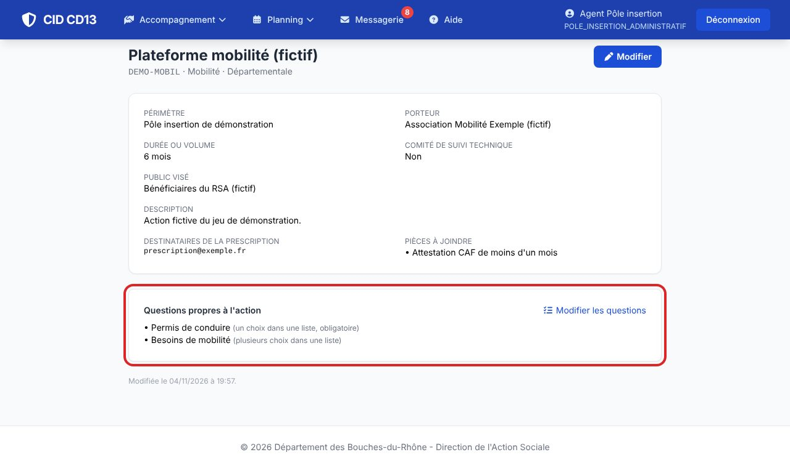
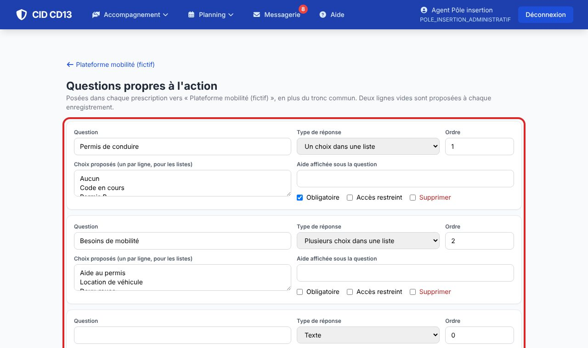

1Ouvrir les questions de l'action

- Sur la fiche d'une action que vous gérez, cliquez sur Modifier les questions.
2Écrire les questions

- Pour chaque question : le libellé, le type de réponse (texte, oui / non, un ou plusieurs choix, date, nombre), les choix (un par ligne), une aide, l'ordre.
- Obligatoire : la prescription ne part pas sans réponse. Accès restreint : réponse visible de la MDS, du cadre et du médecin du pôle seulement (jamais de détail médical).
Bon à savoir
- Supprimer une question efface aussi ses réponses dans les prescriptions : préférez la reformuler.
- Les questions des actions départementales sont conservées par la remise à zéro de démonstration.
Et ensuite ?
Cliquez sur une image pour l'agrandir. Le cadre rouge montre où cliquer ou quoi remplir. Toutes les données affichées sont fictives.